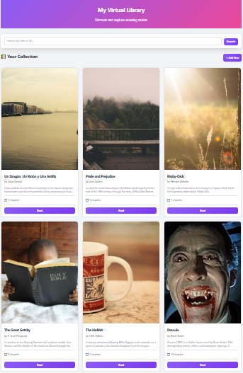
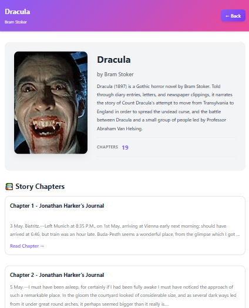
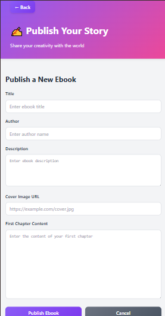

Aplicación web desarrollada con React que permite explorar un catálogo de libros mediante una interfaz moderna basada en componentes reutilizables.
Esta aplicación fue desarrollada utilizando React para crear una experiencia de navegación rápida y dinámica. El catálogo de libros se renderiza de forma dinámica mediante componentes reutilizables, permitiendo visualizar cada libro en formato de tarjeta con su información correspondiente.
El objetivo del proyecto fue practicar la arquitectura basada en componentes, la organización modular del código y la construcción de una Single Page Application moderna.
Visualización de múltiples libros en formato de tarjetas organizadas en un layout responsive.
Uso de React para renderizar componentes de forma dinámica y eficiente.
Arquitectura basada en componentes que facilita la escalabilidad y mantenimiento del proyecto.
La interfaz se adapta correctamente a distintos tamaños de pantalla.


